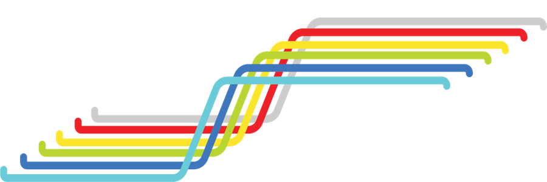

<!DOCTYPE html>
<html>

<head>
    <meta name="viewport" content="width=device-width, initial-scale=1.0">
    <title>Mahmood Jasim</title>
    <link rel="stylesheet" href="https://maxcdn.bootstrapcdn.com/bootstrap/4.0.0/css/bootstrap.min.css"
        integrity="sha384-Gn5384xqQ1aoWXA+058RXPxPg6fy4IWvTNh0E263XmFcJlSAwiGgFAW/dAiS6JXm" crossorigin="anonymous">
</head>

<link rel="stylesheet" href="https://maxcdn.bootstrapcdn.com/bootstrap/4.5.2/css/bootstrap.min.css">
<script src="https://ajax.googleapis.com/ajax/libs/jquery/3.5.1/jquery.min.js"></script>
<script src="https://cdnjs.cloudflare.com/ajax/libs/popper.js/1.16.0/umd/popper.min.js"></script>
<script src="https://maxcdn.bootstrapcdn.com/bootstrap/4.5.2/js/bootstrap.min.js"></script>
<link rel="stylesheet" href="https://cdnjs.cloudflare.com/ajax/libs/font-awesome/4.7.0/css/font-awesome.min.css">

</html>

<style>
    a,
    a:hover,
    a:focus,
    a:active {
        text-decoration: none;
        color: inherit;
    }

    * {
        font-size: 18px;
    }

    .nav-link:after {
        display: block;
        content: '';
        border-bottom: solid 3px #50ABF1;
        transform: scaleX(0);
        transition: transform 250ms ease-in-out;
    }

    .nav-link:hover:after {
        transform: scaleX(1);
    }

    .card {
        border: solid 3px #1E1E1E;
        border-radius: 20px;
    }

    .card:hover {
        border: solid 3px #50ABF1;
        border-radius: 20px;
    }

    .publication {
        margin: 1%
    }

    .publication:hover {
        color: #50ABF1;
        cursor: pointer
    }
</style>

<body style="background-color: #1E1E1E;">
    <div class="container">
        <nav class=" navbar navbar-expand-lg navbar-dark" style="background-color: #1E1E1E;">
            <button class="navbar-toggler" type="button" data-toggle="collapse" data-target="#mynavbar"
                aria-controls="mynavbar" aria-expanded="false" aria-label="Toggle navigation">
                <span class="navbar-toggler-icon"></span>
            </button>
            <div class="collapse navbar-collapse" id="mynavbar">
                <ul class="navbar-nav mr-auto mt-2 mt-lg-0">
                    <li class="nav-item active">
                        <a class="nav-link" style="font-weight: bolder;margin-right:100px" href="">Mahmood Jasim<span
                                class="sr-only">(current)</span></a>
                    </li>
                    <li class="nav-item">
                        <a class="nav-link" href="#">Projects</a>
                    </li>
                    <li class="nav-item">
                        <a class="nav-link" href="#">Publications</a>
                    </li>
                    <li class="nav-item">
                        <a class="nav-link" href="#">CV</a>
                    </li>
                </ul>
                <span class="navbar-text">
                    <a href="mailto:mjasim@cs.umass.edu"><i class="fa fa-envelope-o" aria-hidden="true"
                            style="margin:5px; color:#50ABF1"></i></a>
                </span>
                <span class="navbar-text">
                    <a href="https://scholar.google.com/citations?user=M9M5SdwAAAAJ&hl=en&oi=ao"><i
                            class="fa fa-graduation-cap" aria-hidden="true" style="margin:5px; color:#50ABF1"></i></a>
                </span>
                <span class="navbar-text">
                    <a href="https://twitter.com/mjasimcs"><i class="fa fa-twitter" aria-hidden="true"
                            style="margin:5px; color:#50ABF1"></i></a>
                </span>
                <span class="navbar-text">
                    <a href="https://github.com/mjasim"><i class="fa fa-github" aria-hidden="true"
                            style="margin:5px; color: white"></i></a>
                </span>
                <span class="navbar-text">
                    <a href="https://www.linkedin.com/in/mahmood-jasim-67691321"><i class="fa fa-linkedin"
                            aria-hidden="true" style="margin:5px; color: #0A66C2"></i></a>
                </span>
            </div>
        </nav>
    </div>

    <div class="container" id="introparent"
        style="display:flex; flex-direction: row; margin-top:50px; align-items: center; justify-content: center; color: white;">
        <div id="introleft" style="width:20%; padding:10px">
            
        </div>
        <div id="introright" style="width:70%; padding:10px">
            <h4 style="color:#50ABF1">Hello. I am Mahmood Jasim.</h4>

            <p>
                I am a Ph.D. student working with Professor <a href="https://groups.cs.umass.edu/nmahyar/"
                    style="color:#50ABF1;">Narges Mahyar</a> in
                the <a href="https://groups.cs.umass.edu/hci-vis/" style="color:#50ABF1;">HCI-VIS</a> lab at UMass
                Amherst. My research is focused on
                bridging the gap between decision-makers and
                the data
                providers by developing interactive technologies using information visualization, human computer
                interaction, and machine learning.
            </p>
        </div>
    </div>

    <div class="container"
        style="color:#50ABF1; margin-top: 30px; display:flex; flex-direction:row; justify-content:space-between; padding-left:5%; padding-right:5%">
        <div>Featured Projects</div>
        <div><a href="">See all</a></div>
    </div>

    <div class=" container" id="projectparent" style="display:flex; flex-direction: row; align-items: center; justify-content: center; color:
    white;">
        <div class="card" style="width:30%;margin:1%; background-color: black;">
            
            <div class="card-body">
                <h4 class="card-title">CommunityClick</h4>
                <p>In this project, we created CommunityClick, an interactive system to capture and report community
                    feedback to increase inclusivity in town halls.
                </p>
                <a href="" class="stretched-link"></a>
            </div>
        </div>
        <div class="card" style="width:30%;margin:1%;background-color: black;">
            
            <div class="card-body">
                <h4 class="card-title">Community Input Understanding</h4>
                <p class="card-text">In this project, we aim to study and design technological interventions to enable
                    civic leaders to analyze community-generated input.
                </p>
                <a href="" class="stretched-link"></a>
            </div>
        </div>
        <div class="card" style="width:30%;margin:1%;background-color: black;">
            
            <div class="card-body">
                <h4 class="card-title">RisingEMOTIONS</h4>
                <p class="card-text">RisingEMOTIONS is a collaborative art project with East Boston community members to
                    visualize projected flood levels and people’s emotions about climate change.
                </p>
                <a href="" class="stretched-link"></a>
            </div>
        </div>
    </div>

    <div class="container"
        style="color:#50ABF1; margin-top: 30px; display:flex; flex-direction:row; justify-content:space-between; padding-left:5%; padding-right:5%">
        <div>Featured Publications</div>
        <div><a href="">See all</a></div>
    </div>

    <div class=" container" id="projectparent" style="display:flex; flex-direction: column; align-items: flex-start; justify-content: flex-start; color:
    white; padding-left:4%; padding-right:4%">
        <div class="publication" href="https://people.cs.umass.edu/~mjasim/publications/mjasim2020cclickfull.pdf">
            <i class="fa fa-trophy" aria-hidden="true"></i> CommunityClick: Capturing and Reporting Community Feedback
            from Town Halls to Improve
            Inclusivity, Mahmood
            Jasim, Pooya Khaloo, Somin Wadhwa, Amy X. Zhang, Ali Sarvghad, Narges Mahyar. PACM on Human Computer
            Interaction, CSCW, 2020.
        </div>
        <div class="publication" href="">
            Towards Understanding Desiderata for Large-Scale Civic Input Analysis, Mahmood Jasim, Ali Sarvghad, Enamul
            Hoque, Narges Mahyar, CHI Late Breaking Work, 2020.
        </div>
        <div class="publication" href="">
            Designing Technology for Sociotechnical Problems: Challenges and Considerations, Narges Mahyar, Mahmood
            Jasim, Ali Sarvghad, IEEE computer graphics and applications, 2020.
        </div>

</body>